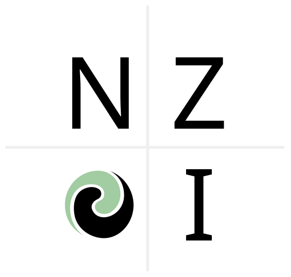
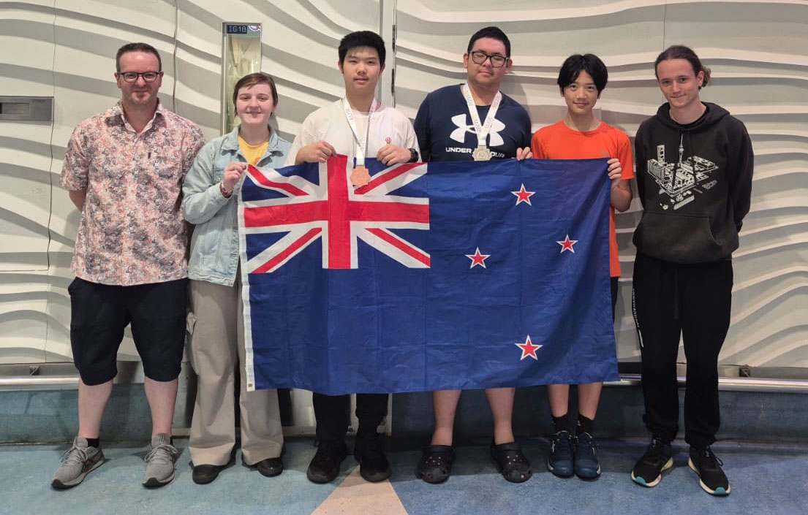

NZOI NZ Olympiad in InformaticsNZOI is organised by a group of people who are keen to share their enjoyment of informatics with New Zealand students. This group includes teachers, professional programmers, and university students. Many in the group have been through the NZOI training programme and competed in an International Olympiad in Informatics.
The group runs a programming contest which has several events throughout the year. It also holds a training camp in January each year to which the top programming students are invited.
The group relies heavily on sponsorship from tertiary organisations and business. The sponsorship subsidises the society’s activities including the supervising adults who are required to accompany the students selected to compete in the international olympiad event. In recent years we have been very fortunate to have the generous support of Jane Street.
The society provides training opportunities in Informatics to selected New Zealand students who are currently enrolled in a New Zealand secondary school. The society selects, from those it has trained, students to attend the International Olympiad in Informatics. The society endeavours to foster informatics in New Zealand secondary schools. The society aims to be a non-profit group with all funds going to fulfill the purposes above.
The 2026 IOI was held in Tashkent, Uzbekistan in the scond week of August.
The four NZ contestants for IOI 2026 were Alan Li (Rangitoto College), Boliang (Eric) Liu (Macleans College), Juno Rainey (Papanui High School), and Peter Zhou (ACG Parnell College). They were accompanied by Anatol Coen and Scott Rainey as the leaders.
Peter won a silver medal and Eric won a bronze medal.

L to R: Scott, Juno, Eric, Peter, Alan, Anatol